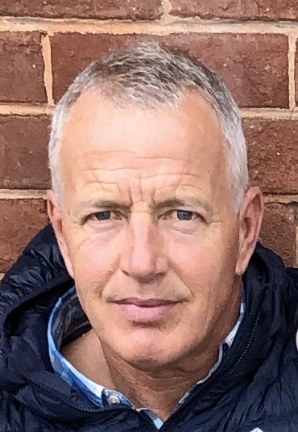
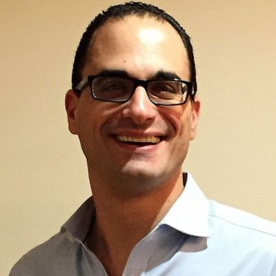
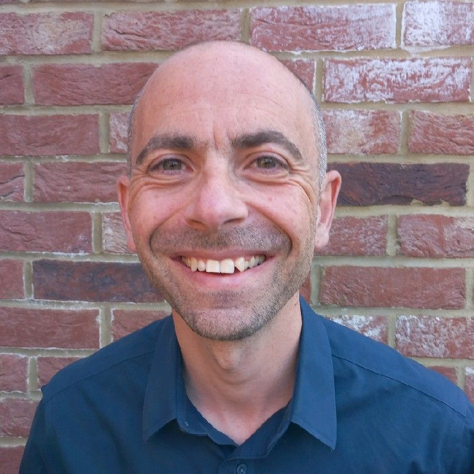
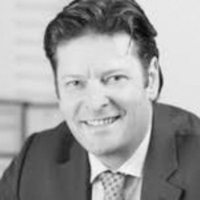
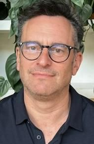

The team
The UK team

Andrew Garland
Chief Executive
Andrew is a former Royal Marine with an extensive military career spanning 37 years, split almost equally between non-commissioned and commissioned rank. He has served across the globe in a broad range of operational, training, staff, command and policy appointments.
On leaving the Royal Marines at the end of 2015 he was employed as the Operational Executive with an investment company based in London, one of the original sponsors of the Veteran Games and Conference. He was first introduced to the team behind the Games in 2018 during the planning and development phase ahead of the inaugural event in 2019.
He combined work in support of the Games with his other employment until spring 2023, when, in recognition of the growth of the programme, he was appointed CEO on a full-time basis. Andrew is married with three children.

Spencer Gelding
Chief Operating Officer
Together with Andrew Wolfson, Spencer was instrumental in establishing the Veteran Games and Conference in 2018. Beyond his philanthropic work, Spencer has a background in property and jewellery businesses spanning over three decades.
Away from work, Spencer is an avid whisky collector and keen traveller. He has been married to Sasha for two decades, and together they have two daughters, Mia and Emily.

David Thrilling
Project Manager
David has a diverse background in mentoring, training, coaching, facilitating and project management within commercial and charitable organisations across sectors including banking, fashion, sport and education.
David has over twenty years’ experience as a volunteer and joined the team as Project Manager in October 2023. His passion is helping others, and he is an avid football fan. David is married to Jeanette and is the proud father of Max and James.
Trustees

Andrew Wolfson
Chairman
Andrew is a founder and CEO of Pembroke Investment Managers LLP. He chose not to attend university, instead embarking on a business career that has taken him across sectors including manufacturing, telecoms and hospitality.
As chairman of Benesco Charity Limited, The Charles Wolfson Charitable Trust and MiSST (Music in Secondary Schools Trust), he contributes to initiatives across many areas of society. Andrew is also Chairman of the Veteran Games and Conference charity.
Andrew is an avid golfer and enjoys exploring the world of wine. He is married to Orly and they have three children.

Marc Samuels
Marc left school at 15 to pursue a career in the building trade. From beginnings as a labourer on a building site, he spent the next 35 years building a successful business in the property industry.
His desire to help others led him to form his own charitable trust focused on supporting those in need. His involvement with the Veteran Games and Conference began in 2019, and Marc and his family volunteered at the 2019, 2022 and 2023 Games.
Marc has three children, Amelie, Isabelle and Josh, and actively encourages them to volunteer with numerous charities.